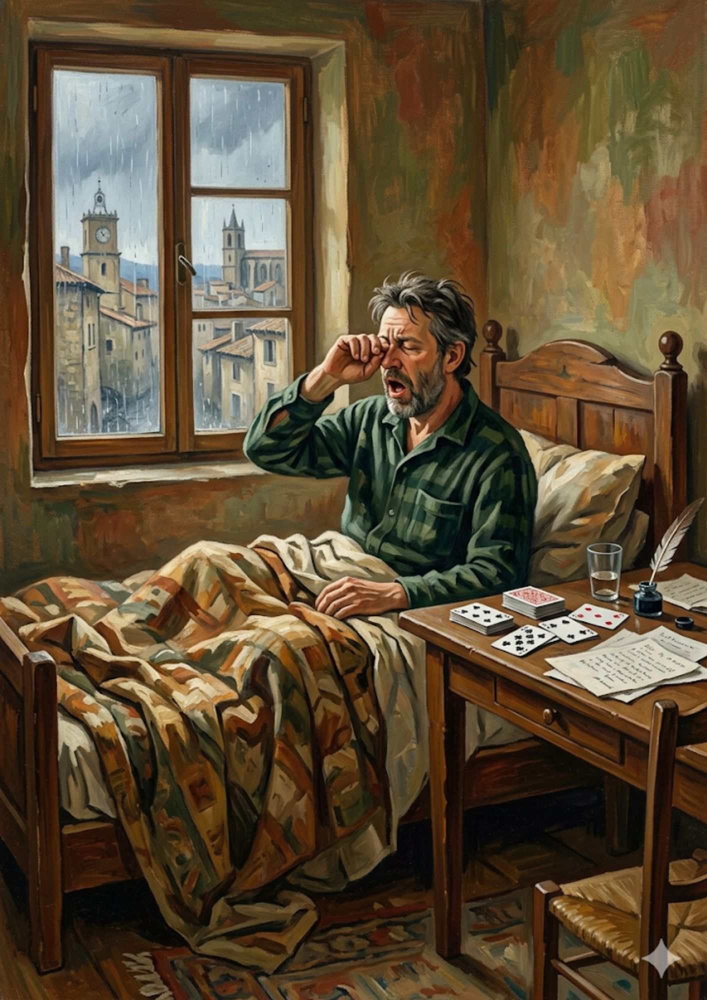
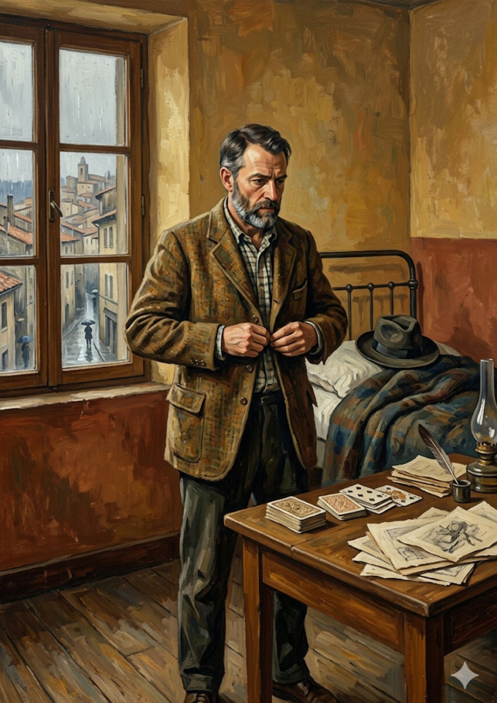
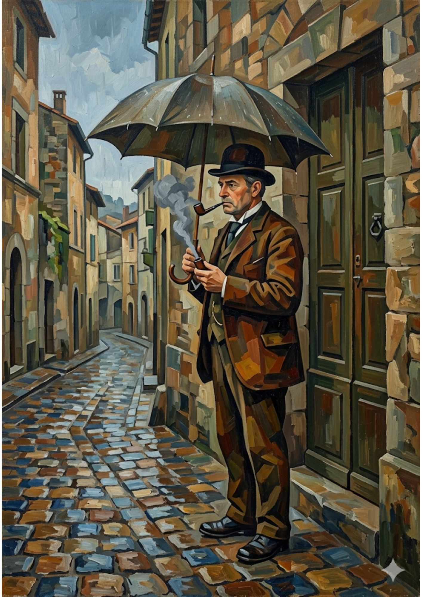
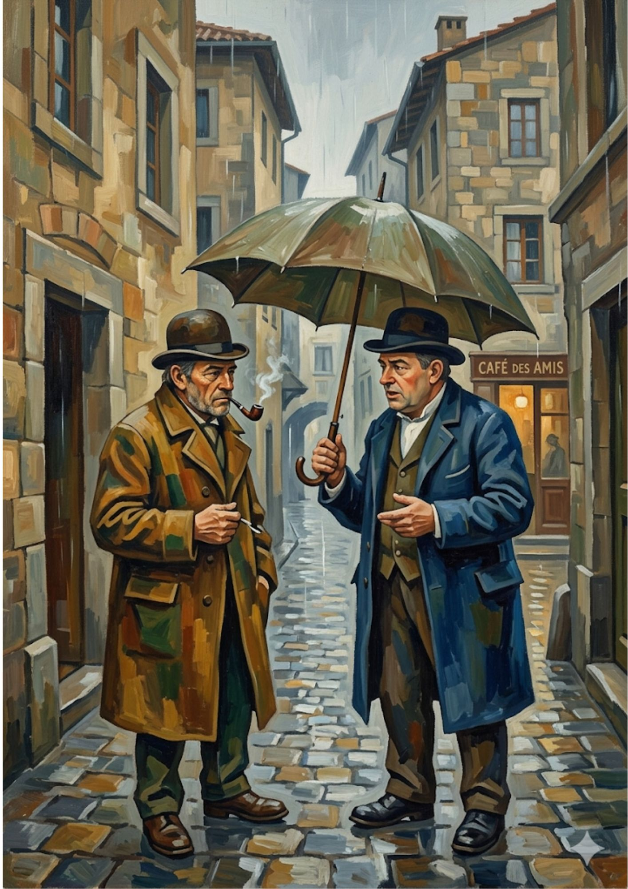
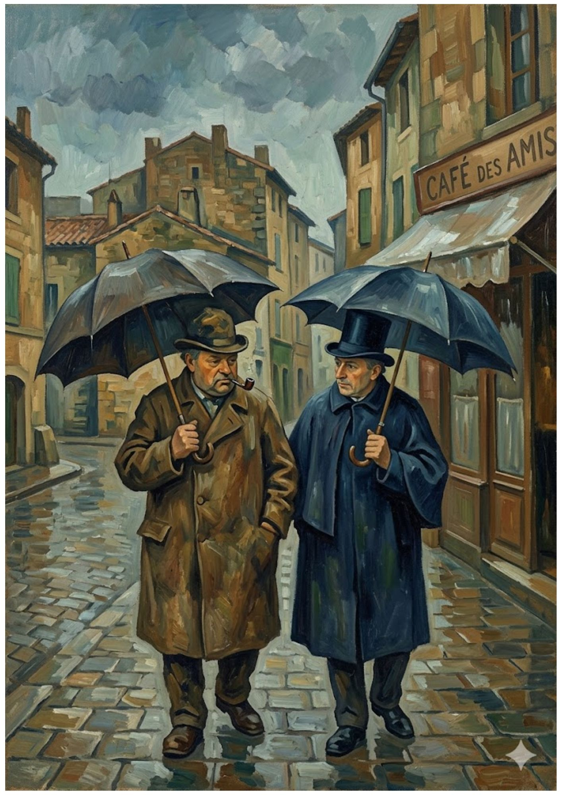
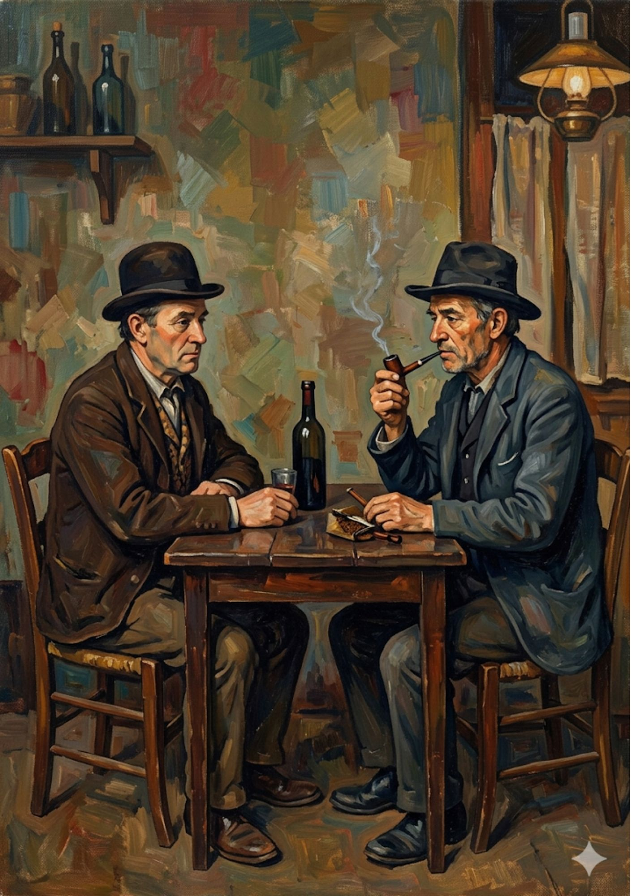
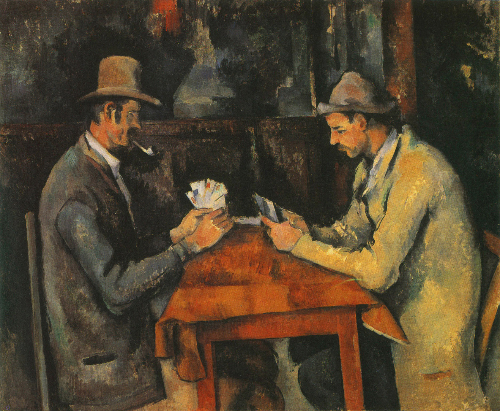
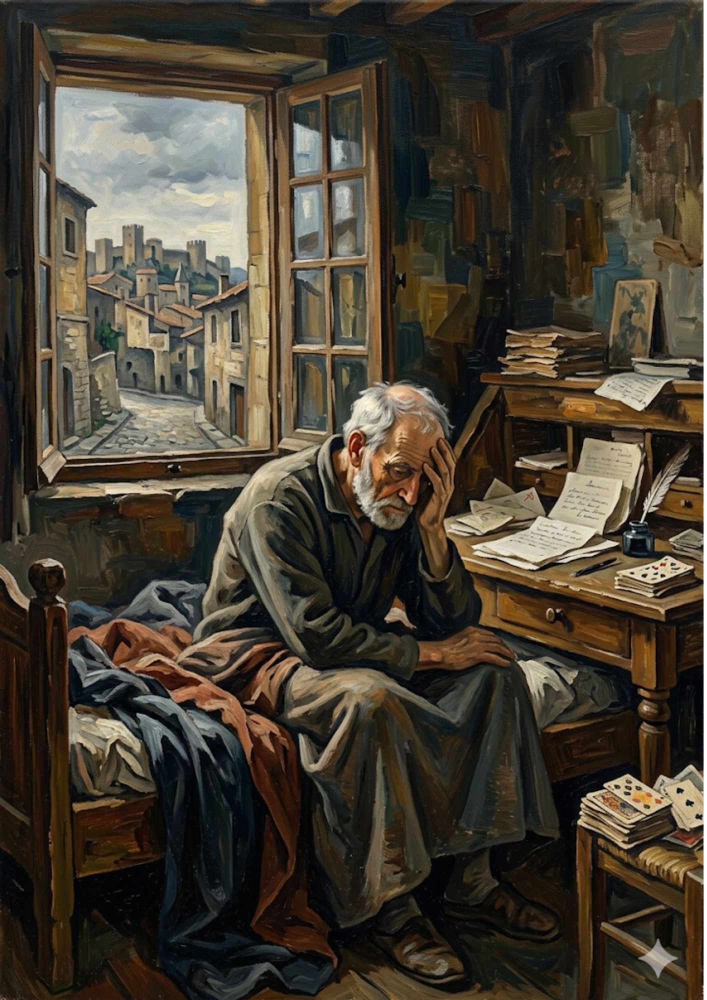
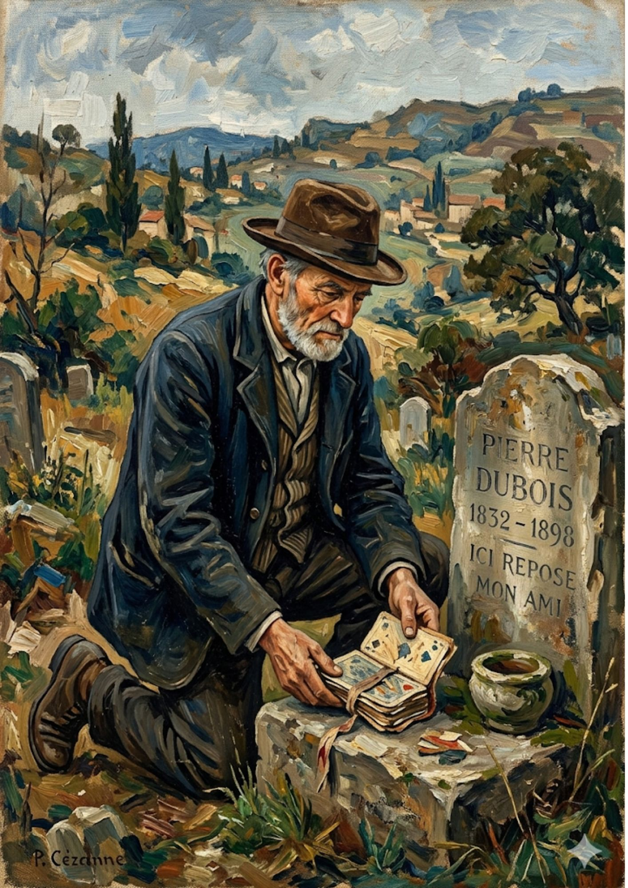

L'uomo si sveglia lentamente nel suo letto, stiracchiandosi e stropicciandosi gli occhi ancora appesantiti dal sonno. Fuori dalla finestra, la pioggia batte incessante sui tetti della cittadina, dipingendo la giornata di un grigio malinconico. Sul tavolo accanto al letto, un mazzo di carte e dei fogli scritti a mano aspettano solo di essere toccati, quasi a voler anticipare i pensieri che accompagneranno la sua giornata.


Ancora avvolto nei suoi pensieri, l'uomo si alza e inizia a vestirsi. Indossa la camicia a quadri e abbottona con cura la sua giacca di lana pesante, lo sguardo fisso nel vuoto, rapito da una strana sensazione di nostalgia. Dalla finestra si intravedono già le prime sagome di passanti che sfidano la pioggia con gli ombrelli aperti. Sul letto lo aspetta il suo cappello, pronto per uscire.
Appena fuori dalla porta di casa, protetto da un grande ombrello, l'uomo si ferma sulla soglia. Accende la sua amata pipa e osserva i ciottoli bagnati della via deserta. Il fumo denso sale nell'aria umida. Mentre assapora quel momento di silenzio,nota in lontananza una figura familiare che avanza verso di lui: è il suo vecchio amico.


I due amici si ritrovano finalmente faccia a faccia lungo la via acciottolata. Condividono lo spazio sotto l'ombrello, scambiando le prime parole della giornata mentre il fumo delle loro pipe si incrocia. L'atmosfera è intima e calorosa, nonostante il freddo della pioggia. Con un cenno della mano, decidono di ripararsi nel posto in cui hanno condiviso mille ricordi: il "Café des Amis".
Camminando fianco a fianco, riparati dai loro ombrelli scuri, i due vecchi amici si dirigono a passo lento verso l'insegna del bar. Chiacchierano del più e del meno, come hanno sempre fatto per tutta la vita, godendosi la reciproca compagnia mentre il paese scorre silenzioso attorno a loro. Il bar appare come un faro di calore in quella giornata così cupa.


Seduti al tavolino di legno del bar, illuminati dalla luce calda di una lampada a petrolio, i due si godono un momento di assoluto relax. Davanti a una bottiglia di vino e a un bicchiere mezzo pieno, continuano a fumare la pipa e a parlare, immersi in un'atmosfera sospesa nel tempo, dove i problemi del mondo esterno sembrano non poterli toccare.
Il cuore del loro incontro si consuma attorno a quel tavolo. Le carte sono finalmente in mano: si studiano gli sguardi, si accennano sorrisi d'intesa e si gioca con la concentrazione tipica di chi si conosce da una vita intera. È un momento perfetto, un quadro di pura complicità e fratellanza che sembra destinato a durare per sempre.


All'improvviso, la realtà si abbatte pesante. L'uomo si risveglia di colpo nel suo letto, stringendosi la testa tra le mani. Fuori dalla finestra il cielo si sta schiarendo, ma nel suo cuore c'è solo buio. Capisce con immenso dolore che il bar, la pioggia e, soprattutto, il suo vecchio amico erano solo parte di un bellissimo e straziante sogno. La sedia davanti allo scrittoio è irrimediabilmente vuota. Il suo amico non c'è più..
Incapace di restare a casa con quel vuoto dentro, l'uomo si reca al cimitero in mezzo alle colline. Si inginocchia davanti alla tomba dell'amico di sempre, sulla quale si legge "Pierre Dubois, 1832-1898 - Ici repose mon ami". Non ha portato fiori. Con mani tremanti ma piene d'amore, deposita sulla pietra mazzi di carte legati da un nastro, l'omaggio più sincero e profondo per l'eterno compagno di mille partite e di una vita intera.

Ispirato a I giocatori di carte di Paul Cézanne, 1890-1895.
Olio su tela, Courtauld Institute of Art, Londra.
Dentro il Quadro · Progetto di scrittura creativa
← Torna alla galleria